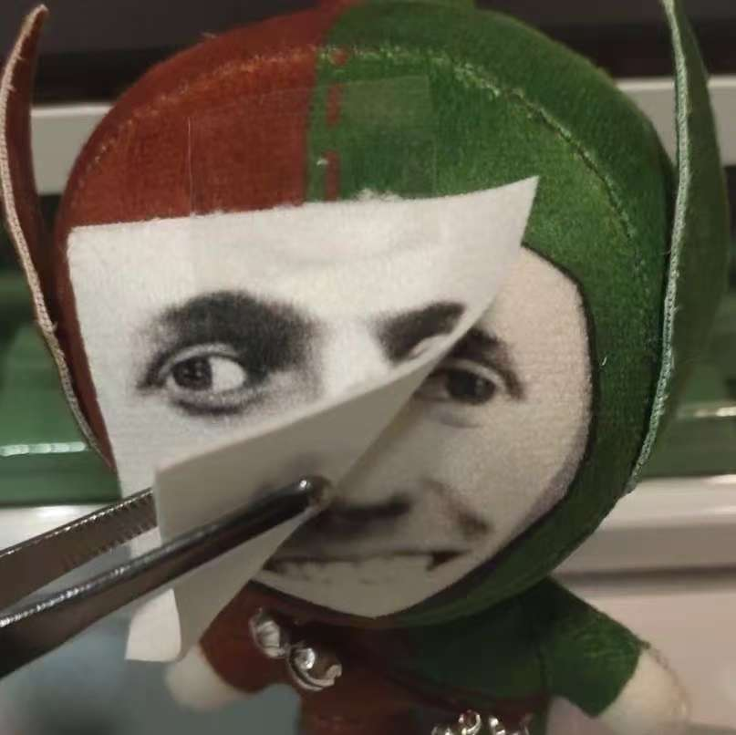
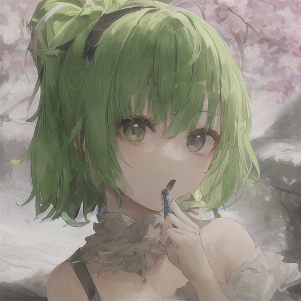

你看我像是耍滑头的人么？
附一张漂亮妹妹的照片
我ai画的
17岁的我
真是回不去了 xdm，不过我指的是年轻的样子 😆
上了大学都吃胖了
皮肤也变差了，头发也少了，然后什么都没学会。
噫嘘唏 🙃
🧭 我的经历
2023
以重庆约 14000 名的高考位次考入 青海大学，专业为 计算机科学与技术。目前为大三学生，自入学以来从未挂科。
2023–2024
大一、大二期间参与多项编程类竞赛，获省级奖项若干。通过 大学英语四级。在课余时间自学并实践 深度学习，完成了多个小型项目：
- CIFAR-10 图像分类
- IMDB 文本情感分析
- 基于 TED 演讲数据集训练的小型 GPT 模型（4060 GPU）
- DDPM 扩散模型的实现与实验
2025
目前专注于计算机系统与底层方向，正在学习 汇编语言、编译原理 与 操作系统。同时对前后端开发保持兴趣，本页面即为个人的全栈练习项目。
💡 技能
编程语言： C++、Python、Java、Rust
数据库： SQL Server、MySQL
方向兴趣： 底层开发 · 前后端设计
🚀 未来展望
希望未来能在 底层开发 或 前后端工程 方向深耕，不断学习系统原理与工程实践，成为能独立构建和优化系统的开发者。
📬 联系我
Email: 2259492701@qq.com
GitHub: daivy2333